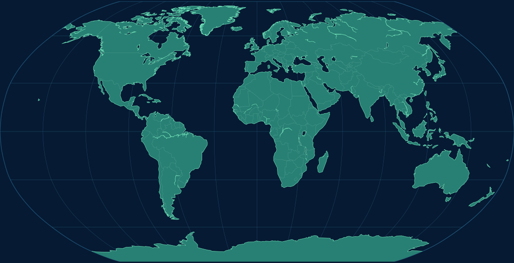
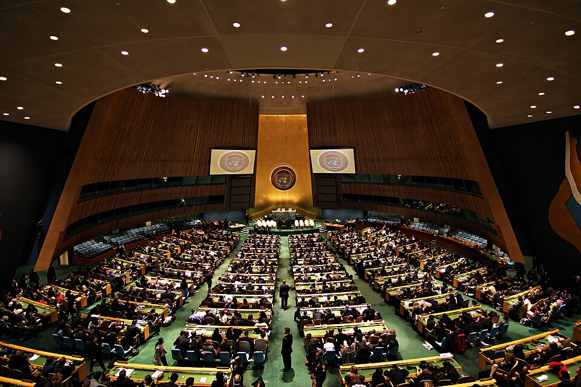

TENDER HEART SCHOOL • SOCIAL SCIENCE EXHIBITION 2026
THE FULL UNITED NATIONS ECOSYSTEM
A cinematic and interactive journey through the organs, agencies and global programmes working for peace, dignity, equality and a healthy planet.
🌍 Interactive Museum📱 Mobile First🔗 Official Sources⚡ Offline Ready
UN
LIVE GLOBAL NETWORK
01 • THE FOUNDING DOCUMENT
The UN Charter and Its Core Values
The Charter is the constitutional foundation of the United Nations. It explains the Organization’s purposes, principles, institutions and responsibilities.
UN
SIGNED IN SAN FRANCISCO • 1945
Charter of the United Nations
The Charter establishes a system of international cooperation based on sovereign equality, peaceful settlement of disputes, human dignity and collective action.
19Chapters
111Articles
24 OctUN Day
Read the Official Charter
CORE VALUE
Peaceful settlement
Member States are expected to resolve international disputes through negotiation, mediation, arbitration, judicial settlement and other peaceful means.
SIX OFFICIAL LANGUAGES
A multilingual global organization
العربيةArabic
中文Chinese
EnglishEnglish
FrançaisFrench
РусскийRussian
EspañolSpanish
01 • THE COMPLETE SYSTEM
One Organization. Many Connected Parts.
Member States debate and decide, UN bodies coordinate, and agencies and field teams turn agreements into action.
SELECT A NODE
Explore the UN ecosystem
Click a connected part to understand its role.
02 • OFFICIAL ORGANIZATIONS
Agency and Organ Explorer
Search or filter the cards. Every profile contains a local QR code for its official website.
No matching organization found.
AGENCY COMPARISON LAB
Compare Two UN Organizations
Select any two organizations to compare their history, location, functions and areas of work.
VS
04 • THE UN IN ACTION
From International Decisions to Real-World Action
The UN brings together diplomacy, law, expertise, finance and field operations. Select a pillar to see how organizations coordinate.
🕊️
PEACE & SECURITY
Prevent, mediate, protect and rebuild
Diplomacy and early warning aim to prevent violence. When conflict occurs, the UN may support mediation, peacekeeping, humanitarian access and peacebuilding.
Explore PeacekeepingIdentify
Collect evidence, assess needs and hear affected communities.
Decide
Member States negotiate, vote and agree on mandates.
Coordinate
Agencies, governments and partners divide responsibilities.
Deliver
Field teams provide services, protection, expertise and support.
Review
Results are monitored and programmes are improved.
GLOBAL ISSUES EXPLORER
One challenge often needs many agencies
05A • EDUCATIONAL FUNDING MODEL
Build a Global Cooperation Plan
Allocate 100 exhibition points among five priorities. This activity demonstrates how difficult international priority-setting can be; it does not represent the real UN budget.
100Points allocated
0Points remaining
YOUR PRIORITY PROFILE
Balanced global cooperation
Your plan gives equal attention to peace, health, education, climate and humanitarian response.
How UN funding works: the regular budget and peacekeeping use assessed contributions, while many funds and programmes also rely heavily on voluntary contributions.
03 • GLOBAL PRESENCE
Interactive Headquarters Map
Select a city to discover major UN offices and organizations.

SELECT A LOCATION
Worldwide UN Network
Major centres connect global diplomacy, law, health, culture, development and humanitarian action.
06A • 193 MEMBER STATES
Country and Region Explorer
Search all United Nations Member States, filter by broad geographic region, and open a country spotlight.
193 countriesSelect a country card
🇺🇳
COUNTRY SPOTLIGHT
Select a Member State
Every UN Member State participates in the General Assembly and has one vote.
04 • PEACE IN ACTION
Peacekeeping Command Centre
More than 50,000 peacekeepers serve in 11 current UN peacekeeping missions.
UN
07A • GLOBAL DECISION-MAKING
United Nations Global Situation Room
Choose a crisis, make three coordinated decisions and see how diplomacy, protection and international cooperation affect the outcome.
🌀
SELECT SCENARIO
SITUATION BRIEF
Severe Cyclone Emergency
A powerful cyclone has affected several coastal regions. Transport, hospitals and clean-water systems are under pressure.
SIMULATED RESPONSE WINDOW72 HOURS
0Diplomacy
0Protection
0Cooperation
OUTCOME PENDING
Complete all three decisions
Your coordination assessment will appear here.
05 • AGENDA 2030
The 17 Sustainable Development Goals
Choose a goal to view its purpose, example and an illustrative exhibition indicator.
06 • INTERACTIVE FUTURE
SDG City 2030
Explore a future city where hospitals, schools, clean energy, water systems, green transport and nature work together.
🚌🚲
🌳🌲🌊🐟
✦✦✦
CLICK A BUILDING
A city where every goal connects
Choose a building to discover the Sustainable Development Goal behind it.
People→Planet→Prosperity→Peace
06 • BECOME A DELEGATE
Interactive Decision Simulators
15-MEMBER CHAMBER • 2026
Security Council Voting Board
DRAFT RESOLUTION SC/EXHIBITION/2026
Increase international cooperation to protect civilians and expand climate education.
A substantive draft needs at least nine Yes votes and no No vote from a permanent member.
193 MEMBER STATES • ONE STATE, ONE VOTE
General Assembly Voting Hall
DRAFT RESOLUTION A/EXHIBITION/2026/1
“Member States should strengthen climate education and international cooperation.”
Choose the voting rule, cast delegate votes, and close the vote to see whether the draft resolution is adopted.
VOTING RULE
A simple majority of members present and voting is required.
NAMED DELEGATE CONSOLE
🇺🇳
193 Member States have not voted.
SELECTED DELEGATESelect a country
GENERAL ASSEMBLY HALL
193 Member-State Seats
Yes
No
Abstain
Not recorded
UNPRESIDENT OF THE GENERAL ASSEMBLY
NAMED VOTE RECORD
Country-by-country result
| Member State | Region | Vote |
|---|---|---|
| No votes recorded yet. | ||
Voting has not closed
Cast votes or select a demonstration, then close the vote.
In the General Assembly, each Member State has one vote. Important questions require a two-thirds majority of members present and voting; other questions require a simple majority. Abstentions are not counted as “present and voting”.
MODEL UNITED NATIONS
Delegate Speech Challenge
YOUR POSITION
Support cooperation while protecting national priorities.
Explain the problem, state your country's approach and propose one practical international action.
SPEAKING TIME
01:00
10 sec Address the committee
15 sec Explain the problem
20 sec Present your position
15 sec Propose action
COORDINATED RESPONSE
Humanitarian Crisis Simulator
⚠️
Select a crisis
The response pathway will appear here.
08 • OFFLINE PHOTO MUSEUM
Inside the United Nations
Explore locally stored photographs of important UN buildings, chambers and humanitarian work. Image credits are included.
INTERACTIVE CHAMBER TOUR
Explore the Rooms Where Diplomacy Happens

SELECT A HOTSPOT
General Assembly Hall
Tap a glowing marker to learn how the chamber functions.
09 • INDIA AND GLOBAL COOPERATION
India and the United Nations
India was a founding Member State and has played a long-standing role in peacekeeping, human rights and sustainable development.
🇮🇳
FOUNDING MEMBER
India at the United Nations
India participated in the San Francisco Conference and became one of the original Member States of the United Nations in 1945.
Official UN India WebsiteFounding Member
India joined the original United Nations membership.
Human Rights Contribution
Indian delegate Hansa Mehta helped shape inclusive language in the Universal Declaration of Human Rights.
Peacekeeping
Indian military, police and medical personnel have served across many missions.
SDG Partnership
The UN Country Team works with Indian institutions and state governments on the Sustainable Development Goals.
08 • HISTORY MUSEUM
Eight Decades of Cooperation
United Nations Founded
The UN Charter entered into force after the Second World War.
Human Rights Declaration
The Universal Declaration of Human Rights was adopted.
Peacekeeping Begins
The first UN peacekeeping operation was established.
Decolonization
Many newly independent states joined the organization.
Millennium Development Goals
Eight goals focused international development efforts.
SDGs Adopted
Countries agreed on the 2030 Agenda and its 17 goals.
14 • GLOBAL OBSERVANCES
United Nations International Days Calendar
Explore selected international observances that promote awareness, education and action on global issues.
24
OCTOBER
United Nations Day
UN Day marks the anniversary of the entry into force of the UN Charter in 1945.
Official Observance Page13 • PROFESSIONAL REFERENCE CENTRE
UN Knowledge Centre
Search important terms, understand UN decision-making, and open trusted official resources.
SEARCHABLE GLOSSARY
Key UN Terms
HOW A RESOLUTION BECOMES ACTION
Decision pathway
01
Issue raised
A Member State, UN body or international situation places an issue on the agenda.
09 • LEARNING LAB
Quiz, Games and UN Assistant
DAILY MUSEUM CHALLENGE
Complete one interactive activity
A new challenge is selected for each calendar day.
UN Knowledge Challenge
Question 1
🤖
UN AI Guide
Smart offline exhibition assistant
Guess the Agency
Printable Museum Certificate
Enter your name after completing the learning zone.
17 • NEGOTIATION & COOPERATION
Diplomacy and Treaty-Building Lab
Negotiate a shared agreement by balancing national priorities, human needs and international cooperation.
DRAFT AGREEMENT
Global Water Cooperation Accord
+
SELECT FOUR CLAUSES
NEGOTIATION ANALYSIS
0/100
Build your agreement
Choose four clauses that balance cooperation, fairness, feasibility and accountability.
Diplomatic principles
Listen to both partiesUse clear and measurable languageInclude implementation and reviewProtect vulnerable communitiesAGENCY RESPONSE TEAM BUILDER
Choose the correct UN response team
Select four agencies:
Build your response team
Select agencies that match the needs of the scenario.
18 • DRAFTING & NEGOTIATION
Build a United Nations Resolution
Create an educational draft resolution using preambular and operative clauses, preview it in formal format, then print or download it.
PREAMBULAR CLAUSES
OPERATIVE CLAUSES
UN
A/EXHIBITION/2026/L.1United Nations General Assembly
Strengthening climate education and youth participation
The General Assembly,
Primary sponsor: IndiaCo-sponsors: —
19 • PEOPLE BEHIND THE MISSION
United Nations Careers and Skills Explorer
Discover the kinds of professionals who support diplomacy, health, humanitarian action, law, science, communication and peacebuilding.
FIND YOUR UN ROLE
Question 1 of 5
Which activity interests you most?
CAREER MATCH
Complete the five questions
Your suggested role and useful school skills will appear here.
QUICK COMPARISON
Six Principal Organs at a Glance
| Organ | Composition | Main Role | Location | Special Feature |
|---|---|---|---|---|
| General Assembly | 193 Member States | Debate and recommendations | New York | One state, one vote |
| Security Council | 15 members | Peace and security | New York | Five permanent members |
| ECOSOC | 54 members | Economic and social coordination | New York | Connects UN system and NGOs |
| ICJ | 15 judges | Legal disputes between states | The Hague | Principal judicial organ |
| Secretariat | International staff | Daily work and implementation | Worldwide | Led by Secretary-General |
| Trusteeship Council | Historic organ | Supervised trust territories | New York | Main mission completed |